The processing conditions menu contains information about the process environment and constants related to general solution behavior.
Heat transfer process conditions definitions have effect on process only by checking Heat transfer check box in Simulation controls Main tab and defining the respective Environment BCC. (See Fig. 9.6.1.)
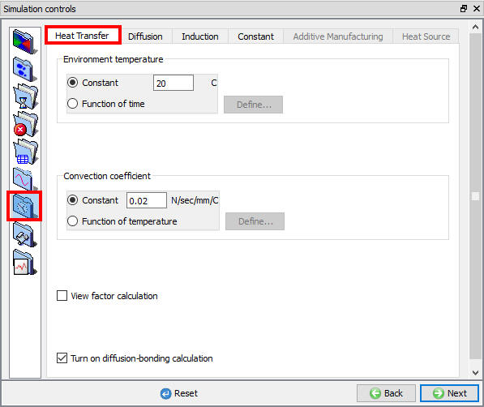
(a)
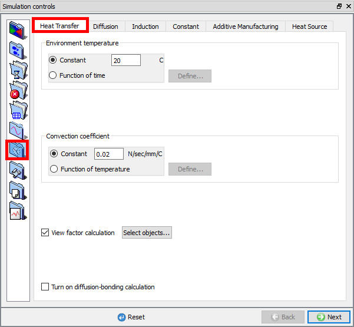
(b)
Heat transfer processing conditions; (a) For 2D (b) For 3D
Environment temperature (ENVTMP) is used in radiation and convection heat transfer calculations and represents the temperature of the area in which the modelled process is taking place. The environment temperature may be specified as a constant or as a function of time. Heat transfer to this temperature is considered to occur from any nodes not in contact with another object. (Unless heat exchange windows are used).
The convection coefficient (CNVCOF) is required for convection heat transfer calculations. The convection coefficient may be specified as a constant or as a function of temperature.
Radiation will be calculated in the simulation when we check the "View factor calculation" check box option and also we can select the object/s for view factor calculation (object selection option available only for 3D as shown in Fig. 9.6.2.).
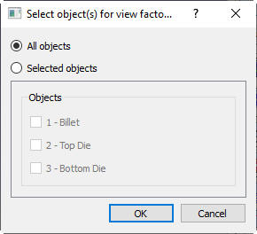
Select object window for view factor calculation (in 3D)
DIffusion bonding will we be calculated in the simulation when we check the "Turn on diffusion-bonding calculation "
Diffusion process conditions definitions have effect on process only by checking Diffusion check box in Simulation controls Main tab and defining the respective Environment BCC. (See Fig. 9.6.3.)
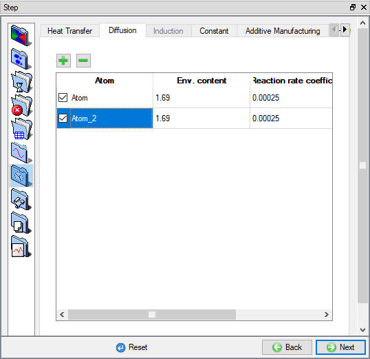
Diffusion processing conditions
The percentage atom content (ENVATM) of the dominant atom (usually carbon) in the environment for diffusion calculations.
The surface reaction rate (ACVCOF) with the atmospheric atom content for diffusion calculations.
From DEFORM-v12 onwards user can define multiple types of atoms for Diffusion by clicking on  button as show in Fig. 9.6.4.
button as show in Fig. 9.6.4.
Note: Current limitation is maximum 2 different types of atoms to be used.
New Diffusion Process condition
Atom (ATOMID)
In the Atom field user can modify the name of each type of atom and can activate/deactivate the diffusion by turning on/turning off the check box.
When we add 2 different types of Atom in Diffusion table, we can observe that the new field f(temperature,
atom1, atom2) is added under Reaction rate coefficient as shown in Fig. 9.6.5.
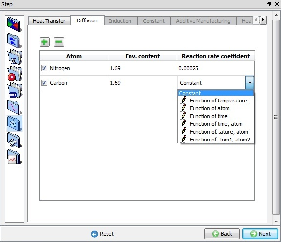
Reaction rate coefficient options
Also in Material properties, under Thermal conductivity and Heat Capacity type list we can observe that a new field f(Temperature, Aom1, Atom2) will be added.
Even in Material properties Diffusion page we can observe multiple atoms defined in
Simulation controls Diffusion page are shown under Atom list so that properties for each atom can be defined independently as shown in Fig. 9.6.6.
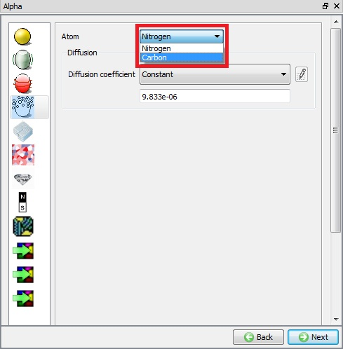
Material Properties Diffusion page
Even in BCC page (see Fig. 9.6.7.), for all Diffusion BCC options we can observe both types of atoms defined in Simulation controls Diffusion page are available and we can define BCC for each Atom type separately.
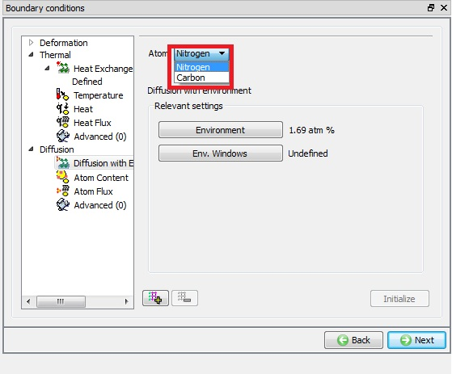
BCC page Multiple Atom option in Diffusion with Environment page
The Induction tab (See Fig. 9.6.8.) is activated by checking the Heating check box in Simulation controls > Main tab.
(a)
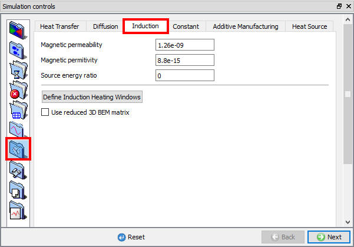
(b)
Induction processing constants ; (a) For 2D (b) For 3D.
Permeability (ENVMPR) is the property of a material that is equal to the magnetic flux density B established within the material by a magnetizing field divided by the magnetic field strength H of the magnetizing field.
The permeability of a vacuum (ENVMPR) is defined in the Simulation Controls > Process Conditions menu. The typical value is provided below for reference.
1.26 x 10-9 H/mm (SI)
3.20 x 10-8 H/in (English)
Permittivity (ENVMPT) is a quantity that describes how a magnetic field affects and is affected by a dielectric medium. It is determined by the ability of a material to polarize in response to the field and thereby reduce the total electric field inside the material. Thus, permittivity relates to a material's ability to transmit (or "permit") a magnetic field.
The permittivity of a vacuum (ENVMPT) is defined in the Simulation Controls > Process Conditions menu. The typical value is provided below for reference.
8.85 x 10-15 F/mm (SI)
2.25 x 10-13 F/in (English)
"Source Energy Ratio" (EHRATE) is a conversion ratio from electric energy to heat.
If "0" or "1000" is specified, it means 100% electric energy is converted to
heat. If "500" is specified, it means 50% conversion.
For process conditions constants settings see Fig. 9.6.9.
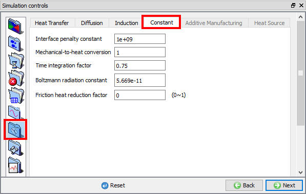
(a)
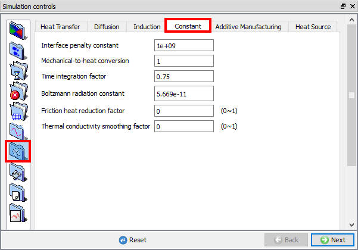
(b)
Advanced process constants ; (a) For 2D (b) For 3D.
A large positive number used to penalize the penetration velocity (PENINF) of a node through a master surface. The default value is adequate for most simulations. It should be at least two to three
orders higher than the volume penalty constant (PENVOL).
For objects of very small size (e.g. fasteners), it is recommended to reduce this number an order of magnitude or two to improve convergence.
This will only aid convergence if the sparse solver is used. This constant can be edited only in Advanced user mode.
A constant coefficient to relate units of heat energy (E.g. BTU) to mechanical energy (E.g. klb-in). Appropriate constant values are automatically set for English and SI Units. This constant can be edited only in Advanced user mode. (UNTE2H)
The time integration factor (TINTGF) is the forward integration coefficient for temperature integration over time. Its value should be between 0.0 and 1.0. The value of 0.75 is adequate for most simulations. This constant can be edited only in Advanced user mode.
The Boltzmann constant (BLZMN) is required for radiation heat transfer calculations. Default values for English and SI are set automatically. In radiation heat calculations the nodal temperature will be automatically converted to absolute temperature (Rankin, Kelvin) based on the selected English or SI units. This constant can be edited only in Advanced user mode.
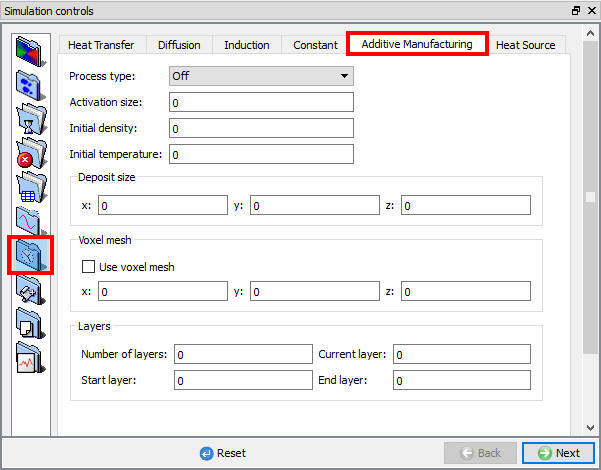
Additive manufacturing process conditions
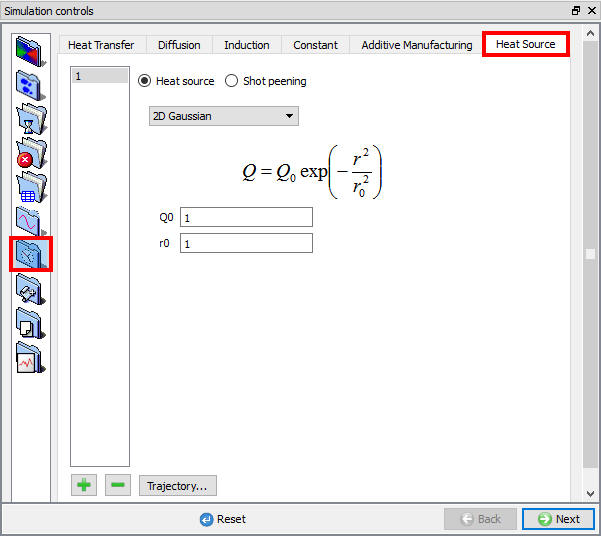
Heat source process conditions
Related Topics:
9.1. Simulation type Settings
9.2. Defining Step
9.3. Stopping Controls
9.4. Remesh Criteria
9.5. Solver Settings
9.7. Advanced Options
9.8. Control Files
9.9. Thermomechanical variables